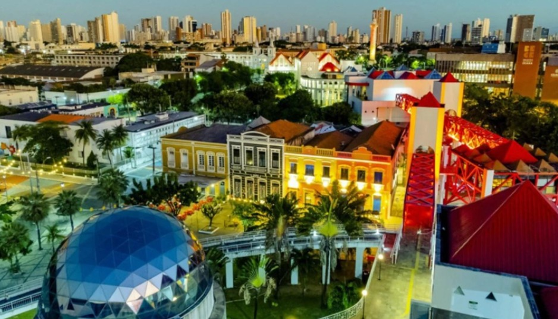

Roots Guide
Pontos Historicos

Centro Cultural Dragão do Mar de Arte e Cultura
O Centro Cultural Dragão do Mar de Arte e Cultura é um dos maiores e mais importantes centros culturais do Brasil, localizado na cidade de Fortaleza, no Ceará. O espaço foi criado com o objetivo de incentivar a arte, a educação, a cultura e o turismo da região Nordeste. O centro cultural reúne diversos ambientes voltados para cultura e entretenimento, como museus, cinema, teatro, planetário, biblioteca, auditórios e áreas de exposições artísticas. Além disso, o local é um importante ponto turístico e cultural da cidade, recebendo milhares de visitantes todos os anos. Curiosidades: O espaço possui museus, cinema, teatro, cafés e até um planetário. É considerado um dos principais centros culturais do Nordeste brasileiro. O nome “Dragão do Mar” homenageia um importante líder abolicionista do Ceará. O Ceará foi a primeira província brasileira a abolir a escravidão, antes mesmo da Lei Áurea. Valor de entrada: A entrada no espaço cultural é gratuita, porém algumas atrações específicas, como cinema, planetário e exposições especiais, podem ter entrada paga com preços acessíveis. Endereço: Rua Dragão do Mar, 81 – Praia de Iracema, Fortaleza – CE Link do Maps: link